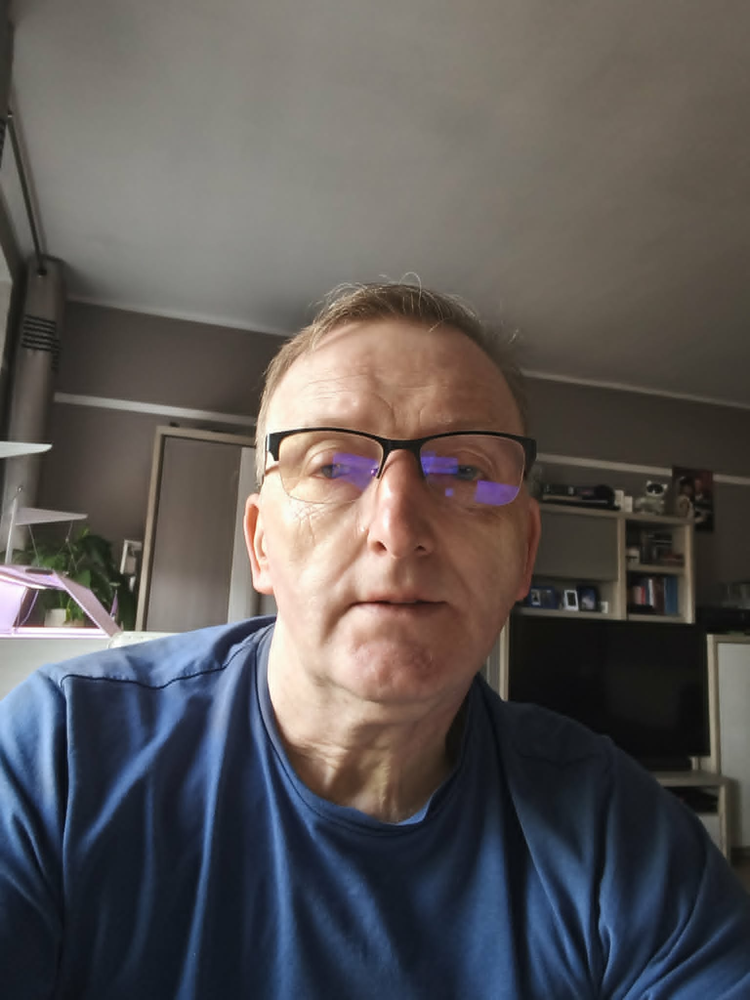

Grzegorz Nowicki
Oferuję kompleksowe usługi w zakresie zakładania i pielęgnacji akwariów.
Moje doświadczenie pozwala
mi
tworzyć
unikalne biotopowe środowiska wodne, które nie tylko zachwycają estetyką, ale także wspierają zdrowie i
dobrostan ryb oraz roślin. Każde akwarium jest traktowane indywidualnie, dostosowując rozwiązania do
potrzeb
biotopu, uwzględniając jego preferencje estetyczne oraz wymagania techniczne.
Tworzę projekty akwariów dostosowane do indywidualnych potrzeb klienta. Uwzględniam rodzaj ryb, roślin, oświetlenie oraz estetykę wnętrza, aby stworzyć harmonijne i funkcjonalne środowisko wodne.
Profesjonalne zakładanie akwariów, w tym przygotowanie podłoża, aranżacja roślin i dekoracji, instalacja filtrów i oświetlenia. Zapewniam optymalne warunki dla ryb i roślin od samego początku.
Oferuję obsłógę w zakresie nawożenia, w tym instalację CO₂, oraz innych zabiegów potrzebnych dla bujnego wzrostu roślin akwariowych.
Regularna pielęgnacja akwariów: czyszczenie, wymiana wody, kontrola stanu zdrowia ryb i roślin, utrzymanie optymalnych warunków środowiskowych. Możliwość stałej współpracy.
Odświeżam i przebudowuje istniejące zbiorniki – nowe nasadzenia, wymiana substratu, poprawa układu, dodanie nowych elementów.
W mojej galerii znajdą państwo:
- wyłącznie zdjęcia moich ryb, oraz różnych biotopów.
- Nie znajdą państwo zdjęć z internetu, ani zdjęć z innych źródeł.
- Każde zdjęcie jest mojego autorstwa, oraz przedstawia moje akwaria.
- Strona będzie regularnie aktualizowana, w miarę moich możliwości.
- W razie pytań, zapraszam do kontaktu.
Imię i nazwisko: Grzegorz Nowicki
Telefon: 883 616 515
E-mail: agip240571@wp.pl
Lokalizacja: Poznań, woj. wielkopolskie
Napisz do nas Zadzwoń